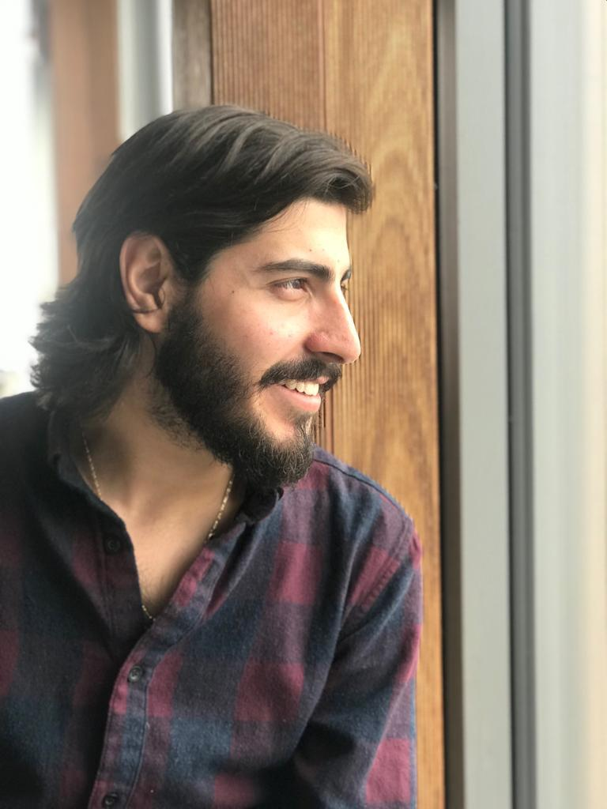

Andrés Rodríguez Del Muro
andres.rdz.96@gmail.com(+52) 8182524758
LinkedIn profile
I am a persevering student that wishes to become an honored and hard-working professional.
Software development intern as part of the Innovation team. Duties include development of internal automation software, dedicated platforms for development, and support in different areas.
Dissertation: integration of a brain computer interface with a virtual home environment as an interaction tool for people with restricted mobility or limited communication.
Exchange focused on international relations during summer 2017 (La Plata, Argentina).
Group that promotes writing as a way of expressing feelings and thoughts, seeking personal peace as well as mindfulness.
Group that promotes social involvement of different classes through outdoor activities and rehabilitation of public spaces such as schools and parks.
Problem solving, team work, critical and innovative thinking, global vision, commitment, leadership, planning, and organization.
Software and hardware development, business management, multiculturalism, traveling, social relations, outdoor activities, and exercising.